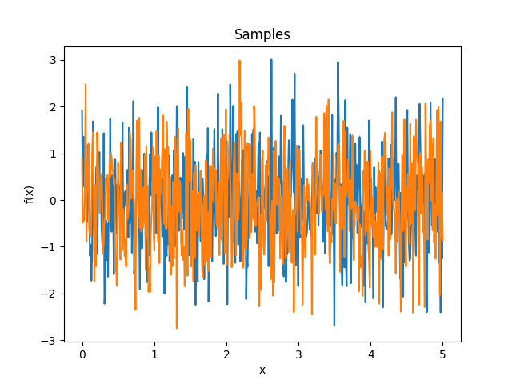
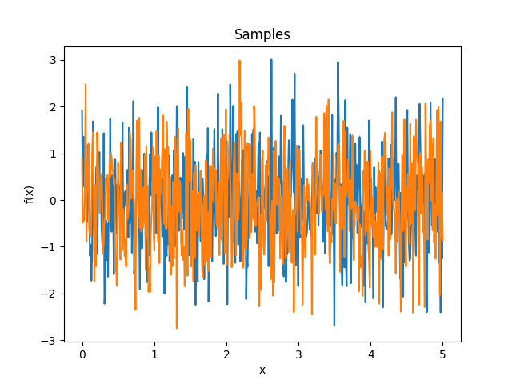

1. Kernels reference¶
This is a list of all the specific kernels implemented in lsqfitgp.
Kernels are reported with a simplified signature where the positional arguments
are r or r2 if the kernel is isotropic, delta if it is stationary, or
x, y for generic kernels, and with only the keyword arguments specific to
the kernel. All kernels also understand the general keyword arguments of
Kernel (or their specific superclass), while there are no positional
arguments when instantiating the kernel and the call signature of instances is
always x, y.
Example: the kernel GammaExp is listed as GammaExp(r, gamma=1).
This means you could use it this way:
import lsqfitgp as lgp
import numpy as np
kernel = lgp.GammaExp(loc=0.3, scale=2, gamma=1.4)
x = np.random.randn(100)
covmat = kernel(x[:, None], x[None, :])
On multidimensional input, isotropic kernels will compute the euclidean distance. In general non-isotropic kernels will act separately on each dimension, i.e., \(k(x_1,y_1,x_2,y_2) = k(x_1,y_1) k(x_2,y_2)\), apart from kernels defined in terms of the dot product.
For all isotropic and stationary (i.e., depending only on \(x - y\))
kernels \(k(x, x) = 1\), and the typical lengthscale is approximately 1 for
default values of the keyword parameters, apart from some specific cases like
Constant.
Warning
You may encounter problems with second derivatives for
CausalExpQuad, FracBrownian, NNKernel,
Taylor, and with first derivatives too for Wendland (but
only in more than one dimension). Color stops working for \(n
> 20\). The following kernels are not compatible with the JAX JIT:
Bessel, Matern, Taylor.
1.1. Index¶
1.1.1. Isotropic kernels¶
1.1.2. Stationary kernels¶
1.1.3. Other kernels¶
1.2. Documentation¶
- class lsqfitgp.AR(delta, phi=None, gamma=None, maxlag=None, slnr=None, lnc=None, norm=False)¶
Discrete autoregressive kernel.
You have to specify one and only one of the sets of parameters phi+maxlag, gamma+maxlag, slnr+lnc.
- Parameters:
- phi(p,) real
The autoregressive coefficients at lag 1…p.
- gamma(p + 1,) real
The autocovariance at lag 0…p.
- maxlagint
The maximum lag that the kernel will be evaluated on. If the actual inputs produce higher lags, the missing values are filled with
nan.- slnr(nr,) real
The real roots of the characteristic polynomial, expressed in the following way:
sign(slnr)is the sign of the root, andabs(snlr)is the natural logarithm of the absolute value.- lnc(nc,) complex
The natural logarithm of the complex roots of the characteristic polynomial (\(\log z = \log|z| + i\arg z\)), where each root also stands for its paired conjugate.
In slnr and lnc, the multiplicity of a root is expressed by repeating the root in the array (not necessarily next to each other). Only exact repetition counts; very close yet distinct roots are treated as separate and lead to numerical instability, in particular complex roots very close to the real line. An exactly real complex root behaves like a pair of identical real roots. Two complex roots also count as equal if conjugate, and the argument is standardized to \([0, 2\pi)\).
- normbool
If True, normalize the autocovariance to be 1 at lag 0. If False (default), normalize such that the variance of the generating noise is 1, or use the user-provided normalization if gamma is specified.
Notes
This is the covariance function of a stationary autoregressive process, which is defined recursively as
\[y_i = \sum_{k=1}^p \phi_k y_{i-k} + \epsilon_i,\]where \(\epsilon_i\) is white noise, i.e., \(\operatorname{Cov}[\epsilon_i, \epsilon_j] = \delta_{ij}\). The length \(p\) of the vector of coefficients \(\boldsymbol\phi\) is the order of the process.
The covariance function can be expressed in two ways. First as the same recursion defining the process:
\[\gamma_m = \sum_{k=1}^p \phi_k \gamma_{m-k} + \delta_{m0},\]where \(\gamma_m \equiv \operatorname{Cov}[y_i, y_{i+m}]\). This is called Yule-Walker equation. Second, as a linear combination of mixed power-exponentials:
\[\gamma_m = \sum_{j=1}^n \sum_{l=1}^{\mu_j} a_{jl} |m|^{l-1} x_j^{-|m|},\]where \(x_j\) and \(\mu_j\) are the (complex) roots and corresponding multiplicities of the characteristic polynomial
\[P(x) = 1 - \sum_{k=1}^p \phi_k x^k,\]and the \(a_{jl}\) are uniquely determined complex coefficients. The \(\boldsymbol\phi\) vector is valid iff \(|x_j|>1, \forall j\).
There are three alternative parametrization for this kernel.
If you specify phi, the first terms of the covariance are computed solving the Yule-Walker equation, and then evolved up to maxlag. It is necessary to specify maxlag instead of letting the code figure it out from the actual inputs for technical reasons.
Likewise, if you specify gamma, the coefficients are obtained with Yule-Walker and then used to evolve the covariance. The only difference is that the normalization can be different: starting from phi, the variance of the generating noise \(\epsilon\) is fixed to 1, while giving gamma directly implies an arbitrary value.
Instead, if you specify the roots with slnr and lnc, the coefficients are obtained from the polynomial defined in terms of the roots, and then the amplitudes \(a_{jl}\) are computed by solving a linear system with the covariance (from YW) as RHS. Finally, the full covariance function is evaluated with the analytical expression.
The reasons for using the logarithm are that 1) in practice the roots are tipically close to 1, so the logarithm is numerically more accurate, and 2) the logarithm is readily interpretable as the inverse of the correlation length.
- static extend_gamma(gamma, phi, n)¶
Extends values of the covariance function to higher lags.
- Parameters:
- gamma(m,) array
The autocovariance at lag q-m+1…q, with q >= 0.
- phi(p,) array
The autoregressive coefficients at lag 1…p.
- nint
The number of new values to generate.
- Returns:
- ext(m + n,) array
The autocovariance at lag q-m+1…q+n.
- static gamma_from_phi(phi)¶
Determine the covariance from the autoregressive coefficients.
- Parameters:
- phi(p,) array
The autoregressive coefficients at lag 1…p.
- Returns:
- gamma(p + 1,) array
The autocovariance at lag 0…p. The normalization is with noise variance 1.
Notes
The result is wildly inaccurate for roots with high multiplicity and/or close to 1.
- static phi_from_gamma(gamma)¶
Determine the autoregressive coefficients from the covariance.
- Parameters:
- gamma(p + 1,) array
The autocovariance at lag 0…p.
- Returns:
- phi(p,) array
The autoregressive coefficients at lag 1…p.
- static phi_from_roots(slnr, lnc)¶
Determine the autoregressive coefficients from the roots of the characteristic polynomial.
- Parameters:
- slnr(nr,) real
The real roots of the characteristic polynomial, expressed in the following way:
sign(slnr)is the sign of the root, andabs(snlr)is the natural logarithm of the absolute value.- lnc(nc,) complex
The natural logarithm of the complex roots of the characteristic polynomial (\(\log z = \log|z| + i\arg z\)), where each root also stands for its paired conjugate.
- Returns:
- phi(p,) real
The autoregressive coefficients at lag 1…p, with p = nr + 2 nc.
- class lsqfitgp.BART(x, y, alpha=0.95, beta=2, maxd=2, splits=None)¶
BART kernel.
- Parameters:
- alpha, betascalar
The parameters of the branching probability.
- maxdint
The maximum depth of the trees.
- splitspair of arrays
The first is an int (p,) array containing the number of splitting points along each dimension, the second has shape (n, p) and contains the sorted splitting points in each column, filled with high values after the length.
Notes
This is the covariance function of the latent mean prior of BART (Bayesian Additive Regression Trees) [1] in the limit of an infinite number of trees, and with an upper bound on the depth of the trees. This prior is the distribution of the function
\[f(\mathbf x) = \lim_{m\to\infty} \sum_{j=1}^m g(\mathbf x; T_j, M_j),\]where each \(g(\mathbf x; T_j, M_j)\) is a decision tree evaluated at \(\mathbf x\), with structure \(T_j\) and leaf values \(M_j\). The trees are i.i.d., with the following distribution for \(T_j\): for a node at depth \(d\), with \(d = 0\) for the root, the probability of not being a leaf, conditional on its existence and its ancestors only, is
\[P_d = \alpha (1+d)^{-\beta}, \quad \alpha \in [0, 1], \quad \beta \ge 0.\]For a non-leaf node, conditional on existence and ancestors, the splitting variable has uniform distribution amongst the variables with any splitting points not used by ancestors, and the splitting point has uniform distribution amongst the available ones. The splitting points are fixed, tipically from the data.
The distribution of leaves \(M_j\) is i.i.d. Normal with variance \(1/m\), such that \(f(x)\) has variance 1. In the limit \(m\to\infty\), the distribution of \(f(x)\) becomes a Gaussian process.
Since the trees are independent, the covariance function can be computed for a single tree. Consider two coordinates \(x\) and \(y\), with \(x \le y\). Let \(n^-\), \(n^0\) and \(n^+\) be the number of splitting points respectively before \(x\), between \(x\), \(y\) and after \(y\). Next, define \(\mathbf n^-\), \(\mathbf n^0\) and \(\mathbf n^+\) as the vectors of such quantities for each dimension, with a total of \(p\) dimensions. Then the covariance function can be written recursively as
\[\begin{split}\newcommand{\nvecs}{\mathbf n^-, \mathbf n^0, \mathbf n^+} k(\mathbf x, \mathbf y) &= k_0(\nvecs), \\ k_D(\nvecs) &= 1, \\ k_d(\nvecs) &= 1 - P_d \Bigg(1 - \frac1p \sum_{i=1}^p \frac1{n^-_i + n^0_i + n^+_i} \Bigg( \\ &\qquad \sum_{k=0}^{n^-_i - 1} k_{d+1}(\mathbf n^-_{n^-_i=k}, \mathbf n^0, \mathbf n^+) + {} \\ &\qquad \sum_{k=0}^{n^+_i - 1} k_{d+1}(\mathbf n^-, \mathbf n^0, \mathbf n^+_{n^+_i=k}) \Bigg) \Bigg), \quad d < D,\end{split}\]where it is intended that when \(n^-_i = n^0_i = n^+_i = 0\), the term of the summation yields 0.
The introduction of a maximum depth \(D\) is necessary for computational feasibility. As \(D\) increases, the result converges to the one without depth limit. In setting \(D\), consider that \(\beta\) regulates the distribution of the depth, with high values strongly favoring shallow trees.
In the maximum allowed depth is 1, i.e., either \(D = 1\) or \(\beta\to\infty\), the kernel assumes the simple form
\[k(\mathbf x, \mathbf y) = 1 - \frac\alpha p \sum_{i=1}^p \frac{n^0_i}{n^-_i + n^0_i + n^+_i},\]which is separable along dimensions.
References
[1]Hugh A. Chipman, Edward I. George, Robert E. McCulloch “BART: Bayesian additive regression trees,” The Annals of Applied Statistics, Ann. Appl. Stat. 4(1), 266-298, (March 2010).
Methods
Generate splitting points from data.
indices_from_coord(x, splits)Convert coordinates to indices w.r.t.
- static indices_from_coord(x, splits)¶
Convert coordinates to indices w.r.t. splitting points.
- Parameters:
- xarray of numbers
The coordinates. Can be passed in two formats: 1) a structured array where each leaf field represents a dimension, 2) a normal array where the last axis runs over dimensions. In the structured case, each index in any shaped field is a different dimension.
- splitspair of arrays
The first is an int (p,) array containing the number of splitting points along each dimension, the second has shape (n, p) and contains the sorted splitting points in each column, filled with high values after the length.
- Returns:
- ixint array
An array with the same shape as x, unless x is a structured array, in which case the last axis of ix is the flattened version of the structured type. ix contains indices mapping x to positions between splitting points along each coordinate, with the following convention: index 0 means before the first split, index i > 0 means between split i - 1 and split i.
- static splits_from_coord(x)¶
Generate splitting points from data.
- Parameters:
- xarray of numbers
The data. Can be passed in two formats: 1) a structured array where each leaf field represents a dimension, 2) a normal array where the last axis runs over dimensions. In the structured case, each index in any shaped field is a different dimension.
- Returns:
- lengthint (p,) array
The number of splitting points along each of p dimensions.
- splits(n, p) array
Each column contains the sorted splitting points along a dimension. The splitting points are the midpoints between consecutive coordinates appearing in x for that dimension. Column
splits[:, i]contains splitting points only up tolength[i], while afterward it is filled with a very large value.


- class lsqfitgp.BagOfWords(x, y)¶
Bag of words kernel.
\[\begin{split}k(x, y) &= \sum_{w \in \text{words}} c_w(x) c_w(y), \\ c_w(x) &= \text{number of times word $w$ appears in $x$}\end{split}\]The words are defined as non-empty substrings delimited by spaces or one of the following punctuation characters: ! « » ” “ ” ‘ ’ / ( ) ‘ ? ¡ ¿ „ ‚ < > , ; . : - – —.
Reference: Rasmussen and Williams (2006, p. 100).
- class lsqfitgp.Bessel(r2, nu=0)¶
Bessel kernel.
\[k(r) = \Gamma(\nu + 1) 2^\nu (sr)^{-\nu} J_{\nu}(sr), \quad s = 2 + \nu / 2, \nu > 0,\]where s is a crude estimate of the half width at half maximum of \(J_\nu\). Can be used in up to \(2(\lfloor\nu\rfloor + 1)\) dimensions and derived up to \(\lfloor\nu/2\rfloor\) times.
Reference: Rasmussen and Williams (2006, p. 89).
- class lsqfitgp.BrownianBridge(x, y)¶
Brownian bridge kernel.
\[k(x, y) = \min(x, y) - xy, \quad x, y \in [0, 1]\]It is a Wiener process conditioned on being zero at x = 1.
- class lsqfitgp.Categorical(x, y, cov=None)¶
Categorical kernel.
\[k(x, y) = \texttt{cov}[x, y]\]A kernel over integers from 0 to N-1. The parameter cov is the covariance matrix of the values.
- class lsqfitgp.Cauchy(r2, alpha=2, beta=2)¶
Generalized Cauchy kernel.
\[k(r) = \left(1 + \frac{r^\alpha}{\beta} \right)^{-\beta/\alpha}, \quad \alpha \in (0, 2], \beta > 0.\]In the geostatistics literature, the case \(\alpha=2\) and \(\beta=2\) (default) is known as the Cauchy kernel. In the machine learning literature, the case \(\alpha=2\) (for any \(\beta\)) is known as the rational quadratic kernel. For \(\beta\to\infty\) it is equivalent to
GammaExp(gamma=alpha, scale=alpha ** (1/alpha)), while for \(\beta\to 0\) toConstant. It is smooth only for \(\alpha=2\).References: Gneiting and Schlather (2004, p. 273), Rasmussen and Williams (2006, p. 86).
- class lsqfitgp.CausalExpQuad(r, alpha=1)¶
Causal exponential quadratic kernel.
\[k(r) = \big(1 - \operatorname{erf}(\alpha r/4)\big) \exp\left(-\frac12 r^2 \right)\]
- class lsqfitgp.Celerite(delta, gamma=1, B=0)¶
Celerite kernel.
\[k(\Delta) = \exp(-\gamma|\Delta|) \big( \cos(\Delta) + B \sin(|\Delta|) \big)\]This is the covariance function of an AR(2) process with complex roots. The parameters must satisfy the condition \(|B| \le \gamma\). For \(B = \gamma\) it is equivalent to the
Harmonickernel with \(\eta Q = 1/B, Q > 1\), and it is derivable.Reference: Daniel Foreman-Mackey, Eric Agol, Sivaram Ambikasaran, and Ruth Angus: Fast and Scalable Gaussian Process Modeling With Applications To Astronomical Time Series.
- class lsqfitgp.Circular(delta, tau=4, c=0.5)¶
Circular kernel.
\[\begin{split}k(x, y) &= W_c(d_{\text{geo}}(x, y)), \\ W_c(t) &= \left(1 + \tau\frac tc\right) \left(1 - \frac tc\right)^\tau_+, \quad c \in (0, 1/2], \tau \ge 4, \\ d_{\text{geo}}(x, y) &= \arccos\cos(2\pi(x-y)).\end{split}\]It is a stationary periodic kernel with period 1.
Reference: Padonou and Roustant (2016).

- class lsqfitgp.Color(delta, n=2)¶
Colored noise kernel.
\[\begin{split}k(\Delta) &= (n-1) \Re E_n(-i\Delta) = \\ &= (n-1) \int_1^\infty \mathrm d\omega \frac{\cos(\omega\Delta)}{\omega^n}, \quad n \in \mathbb N, n \ge 2.\end{split}\]A process with power spectrum \(1/\omega^n\) truncated below \(\omega = 1\). \(\omega\) is the angular frequency \(\omega = 2\pi f\). Derivable \(\lfloor n/2 \rfloor - 1\) times.
- class lsqfitgp.Constant(x, y)¶
Constant kernel.
\[k(x, y) = 1\]This means that all points are completely correlated, thus it is equivalent to fitting with a horizontal line. This can be seen also by observing that 1 = 1 x 1.
- class lsqfitgp.Cos(delta)¶
Cosine kernel.
\[k(\Delta) = \cos(\Delta) = \cos x \cos y + \sin x \sin y\]Samples from this kernel are harmonic functions. It can be multiplied with another kernel to introduce anticorrelations.
- class lsqfitgp.Decaying(x, y)¶
Decaying kernel.
\[k(x, y) = \frac{1}{1 + x + y}, \quad x, y \ge 0\]It is infinitely divisible.
Reference: Swersky, Snoek and Adams (2014).
- class lsqfitgp.ExpQuad(r2)¶
Exponential quadratic kernel.
\[k(r) = \exp \left( -\frac 12 r^2 \right)\]It is smooth and has a strict typical lengthscale, i.e., oscillations are strongly suppressed under a certain wavelength, and correlations are strongly suppressed over a certain distance.
Reference: Rasmussen and Williams (2006, p. 83).
- class lsqfitgp.Expon(delta)¶
Exponential kernel.
\[k(\Delta) = \exp(-|\Delta|)\]In 1D it is equivalent to the Matérn 1/2 kernel, however in more dimensions it acts separately while the Matérn kernel is isotropic.
Reference: Rasmussen and Williams (2006, p. 85).
- class lsqfitgp.Fourier(delta, n=2)¶
Fourier kernel.
\[\begin{split}k(\Delta) &= \frac1{\zeta(2n)} \sum_{k=1}^\infty \frac {\cos(2\pi kx)}{k^n} \frac {\cos(2\pi ky)}{k^n} + \frac1{\zeta(2n)} \sum_{k=1}^\infty \frac {\sin(2\pi kx)}{k^n} \frac {\sin(2\pi ky)}{k^n} = \\ &= \frac1{\zeta(2n)} \sum_{k=1}^\infty \frac {\cos(2\pi k\Delta)} {k^{2n}} = \\ &= (-1)^n \frac {(2\pi)^{2n}} {2\Gamma(2n)} \frac{\zeta(1 - 2n, \Delta \bmod 1)}{\zeta(2n)} = \\ &= (-1)^{n+1} \frac1{\zeta(2n)} \frac {(2\pi)^{2n}} {2(2n)!} B_{2n}(\Delta \bmod 1).\end{split}\]It is equivalent to fitting with a Fourier series of period 1 with independent priors on the coefficients with mean zero and variance \(1/(\zeta(2n)k^{2n})\). The process is \(n - 1\) times derivable.
Note that the \(k = 0\) term is not included in the summation, so the mean of the process over one period is forced to be zero.
Reference: https://dlmf.nist.gov/25.11.E14, https://dlmf.nist.gov/25.11.E9.
- fourier(dox, doy)¶
Compute the Fourier series of the kernel.
\[\begin{split}h(k, y) = \begin{cases} \frac2T \int_0^T \mathrm dx\, k(x, y) \cos\left(\frac{2\pi}T \frac k2 x\right) & \text{if $k$ is even} \\ \frac2T \int_0^T \mathrm dx\, k(x, y) \sin\left(\frac{2\pi}T \frac{k+1}2 x\right) & \text{if $k$ is odd} \end{cases}\end{split}\]The period T is implicit in the definition of the kernel.
- Parameters:
- dox, doybool
Specify if to compute the series w.r.t. x, y or both. If both are False, this is a no-op.
- Returns:
- hKernel-like
A Kernel-like object computing the Fourier series. If dox and doy are equal, it is a Kernel.


- class lsqfitgp.FracBrownian(x, y, H=0.5, K=1)¶
Bifractional Brownian motion kernel.
\[k(x, y) = \frac 1{2^K} \big( (|x|^{2H} + |y|^{2H})^K - |x-y|^{2HK} \big), \quad H, K \in (0, 1]\]For H = 1/2 (default) it is the Wiener kernel. For H in (0, 1/2) the increments are anticorrelated (strong oscillation), for H in (1/2, 1] the increments are correlated (tends to keep a slope).
Reference: Houdré and Villa (2003).
- class lsqfitgp.GammaExp(r2, gamma=1)¶
Gamma exponential kernel.
\[k(r) = \exp(-r^\gamma), \quad \gamma \in (0, 2]\]For \(\gamma = 2\) it is the squared exponential kernel, for \(\gamma = 1\) (default) it is the Matérn 1/2 kernel, for \(\gamma \to 0\) it tends to white noise plus a constant. The process is differentiable only for \(\gamma = 2\), however as \(\gamma\) gets closer to 2 the variance of the non-derivable component goes to zero.
Reference: Rasmussen and Williams (2006, p. 86).
- class lsqfitgp.Gibbs(x, y, scalefun=<function <lambda> at 0x130bc8670>)¶
Gibbs kernel.
\[k(x, y) = \sqrt{ \frac {2 s(x) s(y)} {s(x)^2 + s(y)^2} } \exp \left( -\frac {(x - y)^2} {s(x)^2 + s(y)^2} \right), \quad s = \texttt{scalefun}.\]Kernel which in some sense is like a Gaussian kernel where the scale changes at every point. The scale is computed by the parameter scalefun which must be a callable taking the x array and returning a scale for each point. By default scalefun returns 1 so it is a Gaussian kernel.
Consider that the default parameter scale acts before scalefun, so for example if scalefun(x) = x then scale has no effect. You should include all rescalings in scalefun to avoid surprises.
Reference: Rasmussen and Williams (2006, p. 93).
- class lsqfitgp.Harmonic(delta, Q=1)¶
Damped stochastically driven harmonic oscillator kernel.
\[\begin{split}k(\Delta) = \exp\left( -\frac {|\Delta|} {Q} \right) \begin{cases} \cosh(\eta\Delta) + \sinh(\eta|\Delta|) / (\eta Q) & 0 < Q < 1 \\ 1 + |\Delta| & Q = 1 \\ \cos(\eta\Delta) + \sin(\eta|\Delta|) / (\eta Q) & Q > 1, \end{cases}\end{split}\]where \(\eta = \sqrt{|1 - 1/Q^2|}\).
The process is the solution to the stochastic differential equation
\[f''(x) + 2/Q f'(x) + f(x) = w(x),\]where w is white noise.
The parameter Q is the quality factor, i.e., the ratio between the energy stored in the oscillator and the energy lost in each cycle due to damping. The angular frequency is 1, i.e., the period is 2π. The process is derivable one time.
In 1D, for Q = 1 (default) and scale = sqrt(1/3), it is the Matérn 3/2 kernel.
Reference: Daniel Foreman-Mackey, Eric Agol, Sivaram Ambikasaran, and Ruth Angus: Fast and Scalable Gaussian Process Modeling With Applications To Astronomical Time Series.
- class lsqfitgp.HoleEffect(delta)¶
Hole effect kernel.
\[k(\Delta) = (1 - \Delta) \exp(-\Delta)\]Reference: Dietrich and Newsam (1997, p. 1096).
- class lsqfitgp.Linear(x, y)¶
Dot product kernel.
\[k(x, y) = x \cdot y = \sum_i x_i y_i\]In 1D it is equivalent to fitting with a line passing by the origin.
Reference: Rasmussen and Williams (2006, p. 89).
- class lsqfitgp.Log(r)¶
Log kernel.
\[k(r) = \log(1 + r) / r\]
- class lsqfitgp.MA(delta, w=None)¶
Discrete moving average kernel.
\[k(\Delta) = \sum_{k=|\Delta|}^{n-1} w_k w_{k-|\Delta|}, \quad \mathbf w = (w_0, \ldots, w_{n-1}).\]The inputs must be integers. It is the autocovariance function of a moving average with weights \(\mathbf w\) applied to white noise:
\[\begin{split}k(i, j) &= \operatorname{Cov}[y_i, y_j], \\ y_i &= \sum_{k=0}^{n-1} w_k \epsilon_{i-k}, \\ \operatorname{Cov}[\epsilon_i,\epsilon_j] &= \delta_{ij}.\end{split}\]

- class lsqfitgp.Matern(r2, nu=None)¶
Matérn kernel of real order.
\[k(r) = \frac {2^{1-\nu}} {\Gamma(\nu)} x^\nu K_\nu(x), \quad \nu \ge 0, \quad x = \sqrt{2\nu} r\]The process is \(\lceil\nu\rceil-1\) times derivable: so for \(0 \le \nu \le 1\) it is not derivable, for \(1 < \nu \le 2\) it is derivable but has not a second derivative, etc. The highest derivative is continuous iff \(\nu\bmod 1 \ge 1/2\).
Reference: Rasmussen and Williams (2006, p. 84).
- class lsqfitgp.Maternp(r2, p=None)¶
Matérn kernel of half-integer order.
\[\begin{split}k(r) &= \frac {2^{1-\nu}} {\Gamma(\nu)} x^\nu K_\nu(x) = \\ &= \exp(-x) \frac{p!}{(2p)!} \sum_{i=0}^p \frac{(p+i)!}{i!(p-i)!} (2x)^{p-i} \\ \nu &= p + 1/2, p \in \mathbb N, x = \sqrt{2\nu} r\end{split}\]The degree of derivability is p.
Reference: Rasmussen and Williams (2006, p. 85).
- class lsqfitgp.NNKernel(x, y, sigma0=1)¶
Neural network kernel.
\[k(x, y) = \frac 2 \pi \arcsin \left( \frac { 2 (q + x \cdot y) }{ (1 + 2 (q + x \cdot x)) (1 + 2 (q + y \cdot y)) } \right), \quad q = \texttt{sigma0}^2\]Kernel which is equivalent to a neural network with one infinite hidden layer with Gaussian priors on the weights and error function response. In other words, you can think of the process as a superposition of sigmoids where sigma0 sets the dispersion of the centers of the sigmoids.
Reference: Rasmussen and Williams (2006, p. 90).
- class lsqfitgp.OrnsteinUhlenbeck(x, y)¶
Ornstein-Uhlenbeck process kernel.
\[k(x, y) = \exp(-|x - y|) - \exp(-(x + y)), \quad x, y \ge 0\]It is a random walk plus a negative feedback term that keeps the asymptotical variance constant. It is asymptotically stationary; often the name “Ornstein-Uhlenbeck” is given to the stationary part only, which here is provided as
Expon.
- class lsqfitgp.Periodic(delta, outerscale=1)¶
Periodic Gaussian kernel.
\[k(\Delta) = \exp \left( -2 \left( \frac {\sin(\Delta / 2)} {\texttt{outerscale}} \right)^2 \right)\]A Gaussian kernel over a transformed periodic space. It represents a periodic process. The usual scale parameter sets the period, with the default scale = 1 giving a period of 2π, while the outerscale parameter sets the length scale of the correlations.
Reference: Rasmussen and Williams (2006, p. 92).
- class lsqfitgp.Pink(delta, dw=1)¶
Pink noise kernel.
\[\begin{split}k(\Delta) &= \frac 1 {\log(1 + \delta\omega)} \int_1^{1+\delta\omega} \mathrm d\omega \frac{\cos(\omega\Delta)}\omega = \\ &= \frac { \operatorname{Ci}(\Delta (1 + \delta\omega)) - \operatorname{Ci}(\Delta) } {\log(1 + \delta\omega)}\end{split}\]A process with power spectrum \(1/\omega\) truncated between 1 and \(1 + \delta\omega\). \(\omega\) is the angular frequency \(\omega = 2\pi f\). In the limit \(\delta\omega\to\infty\) it becomes white noise. Derivable one time.
- class lsqfitgp.Rescaling(x, y, stdfun=None)¶
Outer product kernel.
\[k(x, y) = \texttt{stdfun}(x) \texttt{stdfun}(y)\]A totally correlated kernel with arbitrary variance. Parameter stdfun must be a function that takes x or y and computes the standard deviation at the point. It can yield negative values; points with the same sign of fun will be totally correlated, points with different sign will be totally anticorrelated. Use this kernel to modulate the variance of other kernels. By default stdfun returns a constant, so it is equivalent to
Constant.
- class lsqfitgp.Sinc(delta)¶
Sinc kernel.
\[k(\Delta) = \operatorname{sinc}(\Delta) = \frac{\sin(\pi\Delta)}{\pi\Delta}.\]Reference: Tobar (2019).
- class lsqfitgp.StationaryFracBrownian(delta, H=0.5)¶
Stationary fractional brownian motion kernel.
\[k(\Delta) = \frac 12 (|\Delta+1|^{2H} + |\Delta-1|^{2H} - 2|\Delta|^{2H}), \quad H \in (0, 1]\]Reference: Gneiting and Schlather (2006, p. 272).
- class lsqfitgp.Taylor(x, y)¶
Exponential-like power series kernel.
\[k(x, y) = \sum_{k=0}^\infty \frac {x^k}{k!} \frac {y^k}{k!} = I_0(2 \sqrt{xy})\]It is equivalent to fitting with a Taylor series expansion in zero with independent priors on the coefficients k with mean zero and standard deviation 1/k!.
- class lsqfitgp.Wendland(r, k=0, alpha=1)¶
Wendland kernel.
\[\begin{split}k(r) &= \frac1{B(2k+1,\nu)} \int_r^\infty \mathrm du\, (u^2 - r^2)^k (1 - u)_+^{\nu-1}, \\ \quad k &\in \mathbb N,\ \nu = k + \alpha,\ \alpha \ge 1.\end{split}\]An isotropic kernel with finite support. The covariance is nonzero only when the distance between the points is less than 1. Parameter k in (0, 1, 2, 3) sets the differentiability, while the maximum dimensionality the kernel can be used in is \(\lfloor 2\alpha-1 \rfloor\). Default is \(k = 0\) (non derivable), \(\alpha = 1\) (can be used only in 1D).
Reference: Gneiting (2002), Wendland (2004, p. 128), Rasmussen and Williams (2006, p. 87), Porcu, Furrer and Nychka (2020, p. 4).
- class lsqfitgp.White(x, y)¶
White noise kernel.
\[\begin{split}k(x, y) = \begin{cases} 1 & x = y \\ 0 & x \neq y \end{cases}\end{split}\]
 

- class lsqfitgp.Wiener(x, y)¶
Wiener kernel.
\[k(x, y) = \min(x, y), \quad x, y > 0\]A kernel representing a non-differentiable random walk starting at 0.
Reference: Rasmussen and Williams (2006, p. 94).
- class lsqfitgp.WienerIntegral(x, y)¶
Kernel for a process whose derivative is a Wiener process.
\[k(x, y) = \frac 12 a^2 \left(b - \frac a3 \right), \quad a = \min(x, y), b = \max(x, y)\]